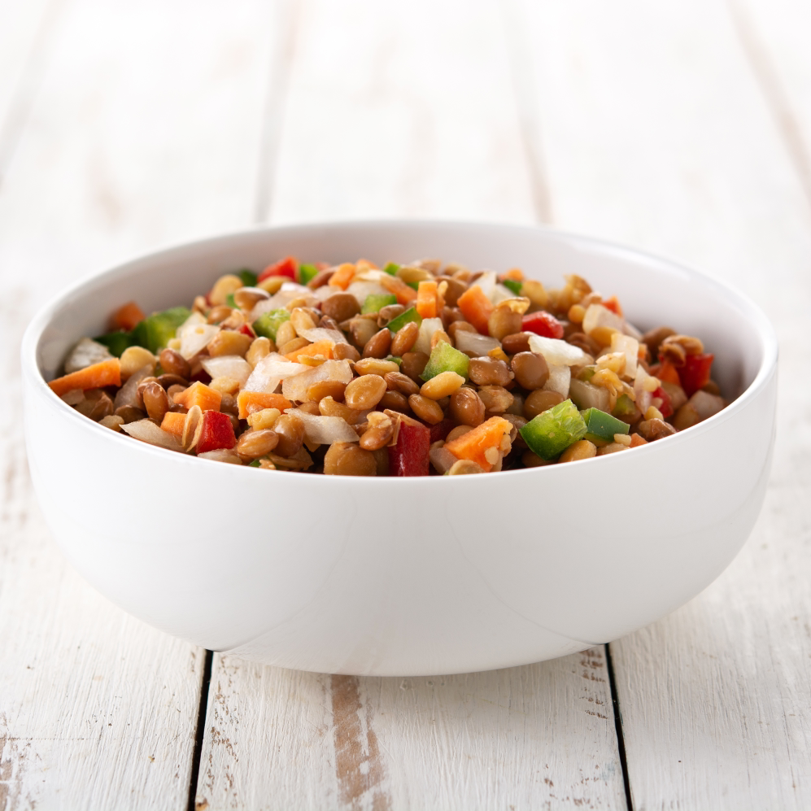
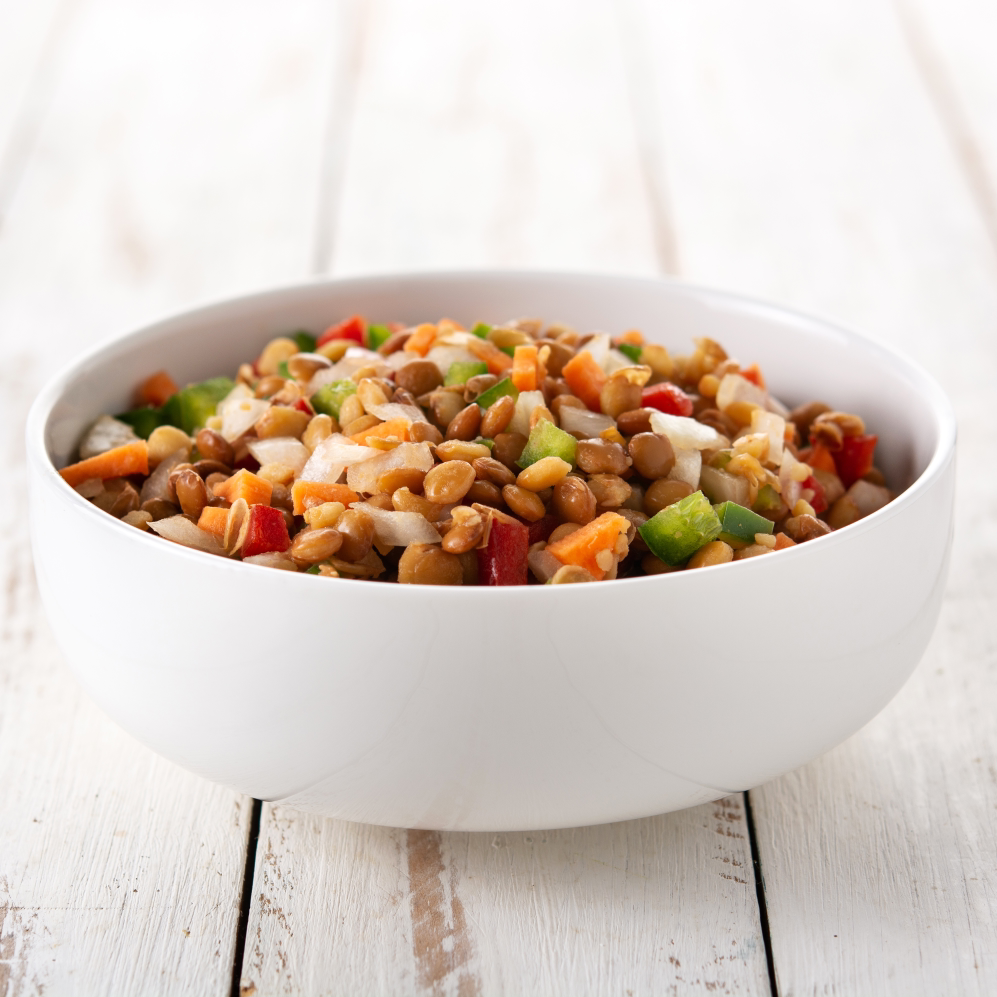

with our chef at your home or office
Do you enjoy cooking, do you have time for it, or maybe you do not know how to make a delicious dinner for yourself and your family? - that’s perfectly okay, that is why we are here to make life easier. Hire your local Private Chef today — it’s more affordable than you think, even if it may sound like a luxury.
We’re happy to cook using your favorite recipes, or we can suggest some of ours. Our chef works in the popular 5* restaurant and holds a food hygiene certificate accordingly. Our philosophy is simple: we shouldn’t just eat food — we should enjoy the food we truly love. Eat what you love with iCOOK because you can.
Not everyone has the time or ability to cook, yet homemade food is often the healthiest and most satisfying option. If you can afford to dine out at restaurants, you can certainly afford the comfort and quality of freshly prepared meals from our private chef. Restaurants may not always meet your expectations — the dish you love might not be available, menus change, or certain ingredients can’t be customized. With a private chef, those risks disappear. You decide what you want to eat, whether it’s your favorite family recipe or something new you’ve discovered online, and our chef will bring it to life in your own kitchen.
Depending on the recipe, preparation time may vary. To keep costs low, you can purchase the ingredients yourself, or for convenience, our chef can shop for you at a small additional cost — typically £5 plus the price of the groceries, with all receipts provided. When your chef arrives, you’ll only be charged for the time spent cooking in your kitchen. All pricing and details are agreed upon in advance, so there are no surprises. All you need to do is make sure your kitchen is ready, and your private chef will take care of the rest.
Not everyone has the time or ability to cook, yet homemade food is often the healthiest and most satisfying option. If you can afford to dine out at restaurants, you can certainly afford the comfort and quality of freshly prepared meals from our private chef. Restaurants may not always meet your expectations — the dish you love might not be available, menus change, or certain ingredients can’t be customized.
With a private chef, those risks disappear. You decide what you want to eat, whether it’s your favorite family recipe or something new you’ve discovered online, and our chef will bring it to life in your own kitchen. Depending on the recipe, preparation time may vary. To keep costs low, you can purchase the ingredients yourself, or for convenience, our chef can shop for you at a small additional cost — typically £5 plus the price of the groceries, with all receipts provided.
When your chef arrives, you’ll only be charged for the time spent cooking in your kitchen. All pricing and details are agreed upon in advance, so there are no surprises. All you need to do is make sure your kitchen is ready, and your private chef will take care of the rest.

 


Pretty much anything you like! Our chef can prepare her signature dishes, or you can share your preferences and favorite recipes. If there are ingredients you don’t enjoy, or if you have specific dietary needs, simply let her know — she’ll be happy to suggest alternatives that suit your taste. To avoid any confusion, it’s always a good idea to put your requests in writing. This way, you’ll remember exactly what you asked for, and the chef can be sure she has understood your wishes correctly. Check our menu for some inspiration here!
Pretty much anything you like! Our chef can prepare her signature dishes, or you can share your preferences and favorite recipes. If there are ingredients you don’t enjoy, or if you have specific dietary needs, simply let her know — she’ll be happy to suggest alternatives that suit your taste. To avoid any confusion, it’s always a good idea to put your requests in writing. This way, you’ll remember exactly what you asked for, and the chef can be sure she has understood your wishes correctly.